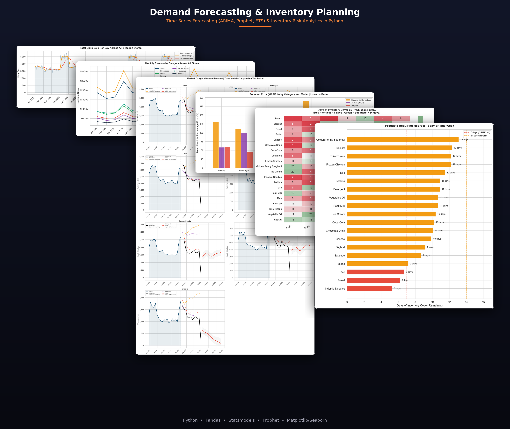
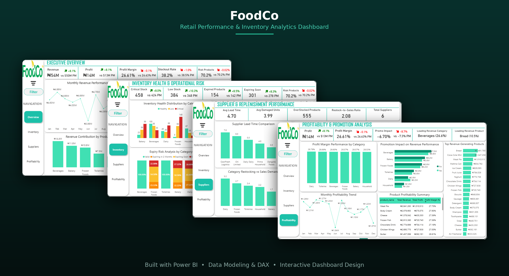
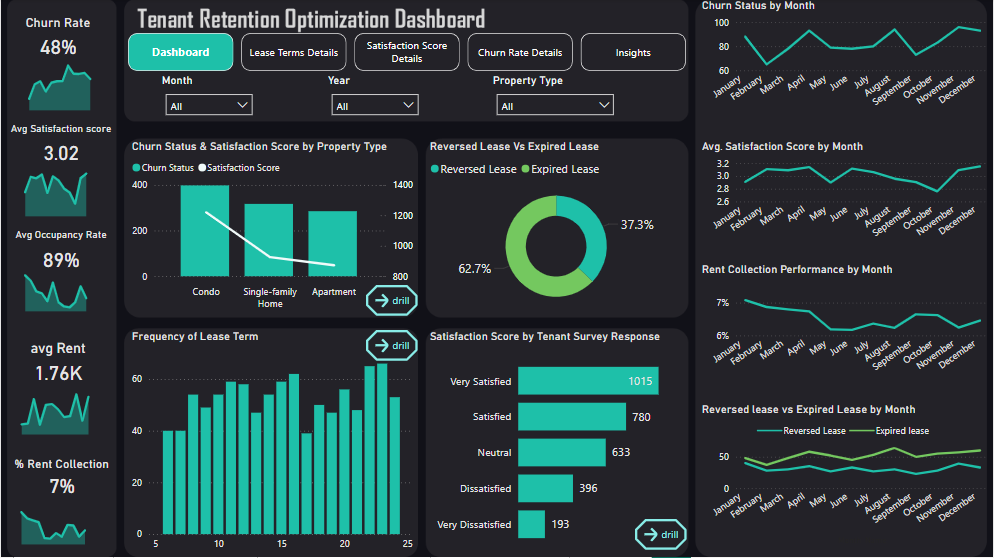

A retail chain experienced 19,262 stockouts in just 18 months, yet the root cause was not where anyone would expect. Using PostgreSQL and Python, I analyzed sales, inventory, and supplier data to uncover a hidden replenishment problem affecting every product category. The project transformed raw operational data into demand forecasts, inventory recommendations, reorder points, and supplier adjusted safety stock designed to support better supply chain decisions.

Most retail stockouts begin long before a shelf becomes empty. Using PostgreSQL and Power BI, I analyzed inventory and supply chain operations across five store locations to identify the hidden drivers of stockouts, waste, and supplier inefficiencies. The project uncovered a 38% stockout rate occurring even during low demand periods, revealing that replenishment decisions, not customer demand, were the primary issue. The final solution included an executive dashboard and actionable recommendations across seven key operational areas.

Built a SQL driven system in PostgreSQL to minimise carrying costs while avoiding stockouts. I imported sales and economic data, used window functions to calculate reorder points and safety stock, and automated the process with stored procedures so the recommendations stay current.

UrbanEats faced delivery delays, driver turnover, and traffic congestion in dense city areas. I analysed delivery logs with SQL and built a Power BI dashboard to spot problem routes and times. The insights led to better driver scheduling, real time route adjustments, and improved customer communication, cutting average delivery time by 12%.

Property managers were losing tenants faster than they could replace them, and lease renewals were handled reactively. I designed a Power BI dashboard that consolidates lease data, payment history, and maintenance requests. It highlights tenants at risk of leaving, so managers can take early action and improve retention rates.
About
I am a data analyst with a Bachelor's degree in Statistics from the University of Ibadan. My work sits at the intersection of analytics and operations. I look at business problems through data, measure what actually matters, and build tools that help people make better decisions.
I work regularly with SQL, Python, and Power BI. My projects have covered inventory planning, demand forecasting, route optimisation, and customer retention. I am particularly drawn to supply chain analytics, where small changes in forecasting and planning can have a large operational impact.
I approach each project the same way: understand the problem, get the data, analyse it thoroughly, and present findings clearly enough that someone can act on them.